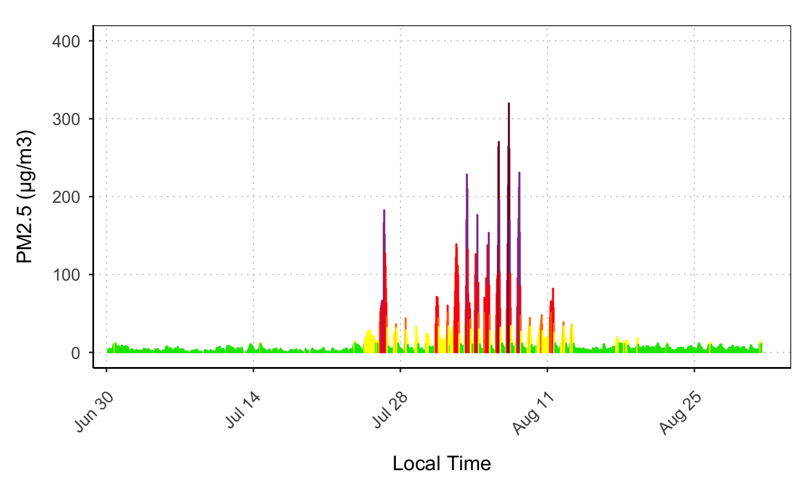
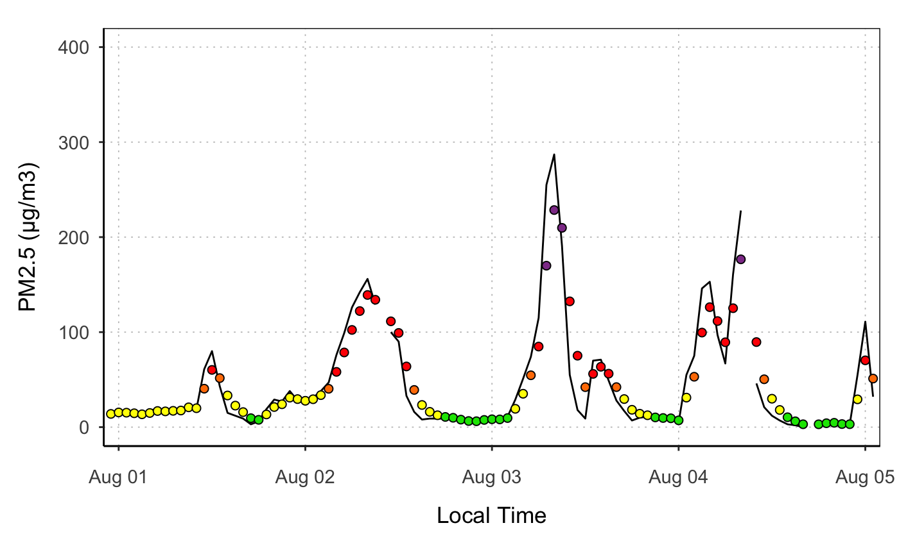

This function calculates the AQI PM25 categories for the data, and colors the data by AQI cateogry when it is added to a plot. The default is to add them as bars.
stat_AQILevel(mapping = NULL, data = NULL, mv4Colors = FALSE, nowcast = TRUE, geom = "bar", position = "identity", na.rm = FALSE, show.legend = NA, inherit.aes = TRUE, ...)
| mapping | Set of aesthetic mappings created by |
|---|---|
| data | The data to be displayed in this layer. There are three options:
if |
| mv4Colors | If |
| nowcast | If |
| geom | The geometic object to display the data |
| position | Position adjustment, either as a string, or the result of a call to a position adjustment function. |
| na.rm | remove NA values from data |
| show.legend | logical indicating whether this layer should be included in legends. |
| inherit.aes | if |
| ... | additional arguments passed on to |
#> Warning: Removed 101 rows containing non-finite values (stat_nowcast).#> Warning: Removed 11 rows containing missing values (geom_bar).ggplot_pm25Timeseries(ws_monitor, startdate = 20160801, enddate = 20160805) + geom_line() + stat_AQILevel(geom = "point", size = 2, shape = 21, color = 1)#> Warning: Removed 1395 rows containing non-finite values (stat_nowcast).#> Warning: Removed 1390 rows containing missing values (geom_path).#> Warning: Removed 11 rows containing missing values (geom_point).